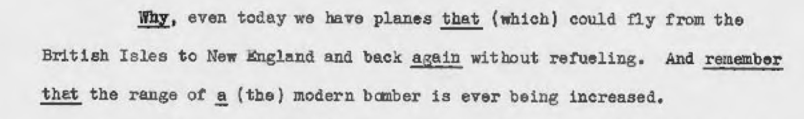
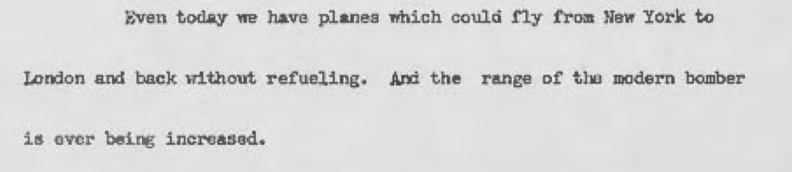
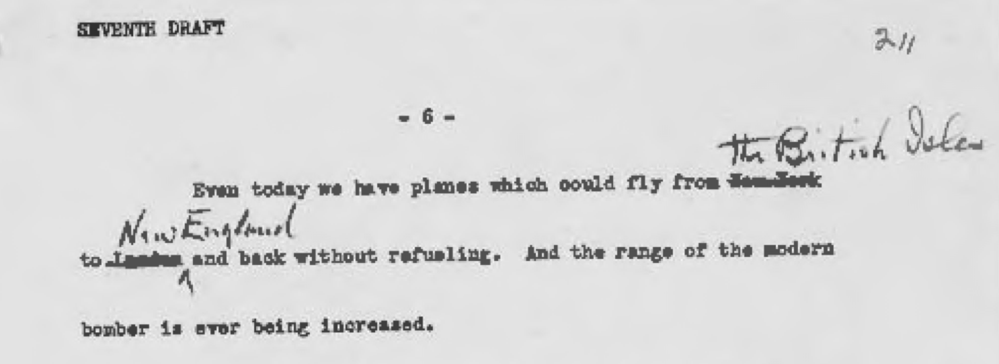

How much of a threat did Germany pose to the United States before Pearl Harbor? That’s the big question; let’s look at a small part of it. Historians often say Roosevelt exaggerated the specific threats Nazi Germany posed; here we’ll look at one claim about the threat posed by German bombers.
Likewise, the military scenarios Roosevelt sketched had little basis in reality. . . . In December 1940 he made the remarkable claim that “even today we have planes that could fly from the British Isles to New England and back again without refueling.”1
It might seem to us remarkable that in December 1940, airplanes could fly the distance of an Atlantic round trip, but it was not remarkable to claim it. The crossing comes to about a 3,000-mile flight one way, so a return journey would total 6,000 miles. The Imperial Airways seaplane Mercury completed a flight of more than 6,000 miles non-stop from Dundee, Scotland to the Orange River in South Africa in October 1938.2 This feat was reported in the newspapers, together with comparable records. Not only was Roosevelt’s statement simply true, many of his listeners would have known it already.

Let’s look more closely at Roosevelt’s specific claim. This is what it says in the reading copy:

And here’s what Roosevelt actually said, according to transcription at the time:

First, this claim was refined in the process of writing the speech. Thanks to the FDR Presidential Library, we can link to the relevant folder in the Master Speech File and see that in earlier drafts, this paragraph read,

The claim that planes could fly return from New York to London was probably supportable enough, given the flight of the Mercury. But at the seventh draft, Roosevelt changed it (notice the handwriting):

Now not only is the distance more accurate and defensible—from “the British Isles” to “New England” is more accurately the route Imperial Airways was even then, despite the war, flying; but by changing its direction Roosevelt was, of course, emphasizing the potential threat should Britain fall to Germany.
Second, the claim about the outside range of existing aircraft is coupled here with a second claim. It’s clear with these two sentences that Roosevelt and his speechwriters are making a distinction between what the longest-distance airplanes could already do, and what modern bombers could soon do. This observation supports a generalization I want to make and will probably make again: Roosevelt and his speechwriters were quite careful.
The claim about how bombers were then developing, and what their capacity would be, was also correct. The B-29, though it was still on the drawing board, would have a maximum range of 5,830 miles. The experimental predecessor to the B-29, the XB-15, had already flown in 1937, and derived from a plan for a bomber with an effective range of 5,000 miles.3 Americans attentive to the news would have known about the XB-15; Major Caleb Haynes of the US Army air corps had flown one on an earthquake relief mission from Langley to Santiago, Chile, stopping in Panama and Peru, in February 1939.
Again, not only did Roosevelt make a carefully constructed and factually correct claim, he made one that many of his listeners would have understood to be readily supportable.
Footnotes
John A. Thompson, “The Exaggeration of American Vulnerability: The Anatomy of a Tradition,” Diplomatic History 16, no. 1 (January 1992): 30.↩︎
David W. Wragg, Boats of the Air: An Illustrated History of Flying Boats, Seaplanes and Amphibians (London: Robert Hale, 1984), 149.↩︎
Marcelle Size Knaack, Encyclopedia of U.S. Air Force Aircraft and Missile Systems, vol. 2: Post–World War II Bombers, 1945--1973 (Washington, D.C.: Office of Air Force History, 1988), 479.↩︎